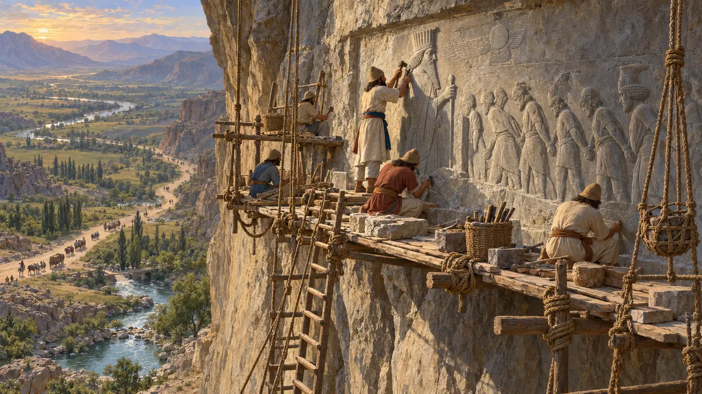
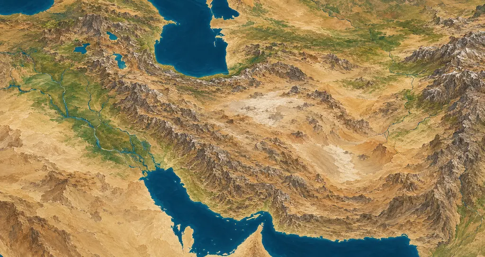
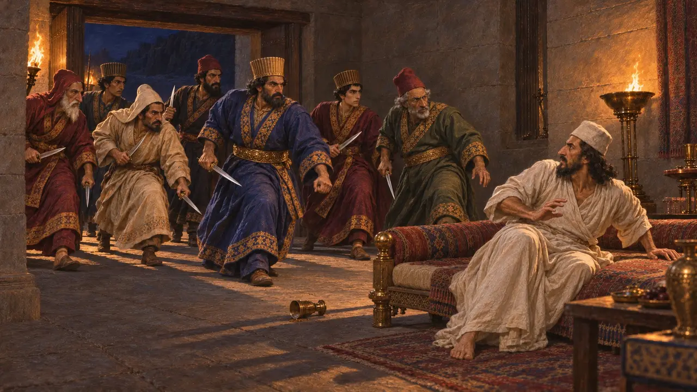
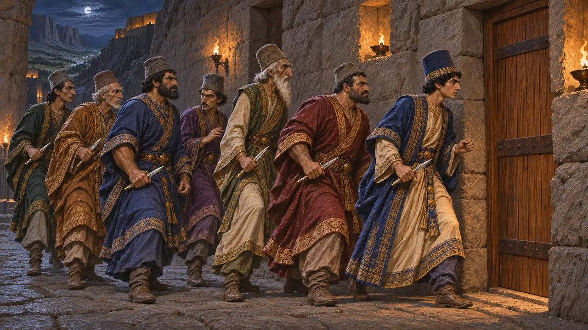
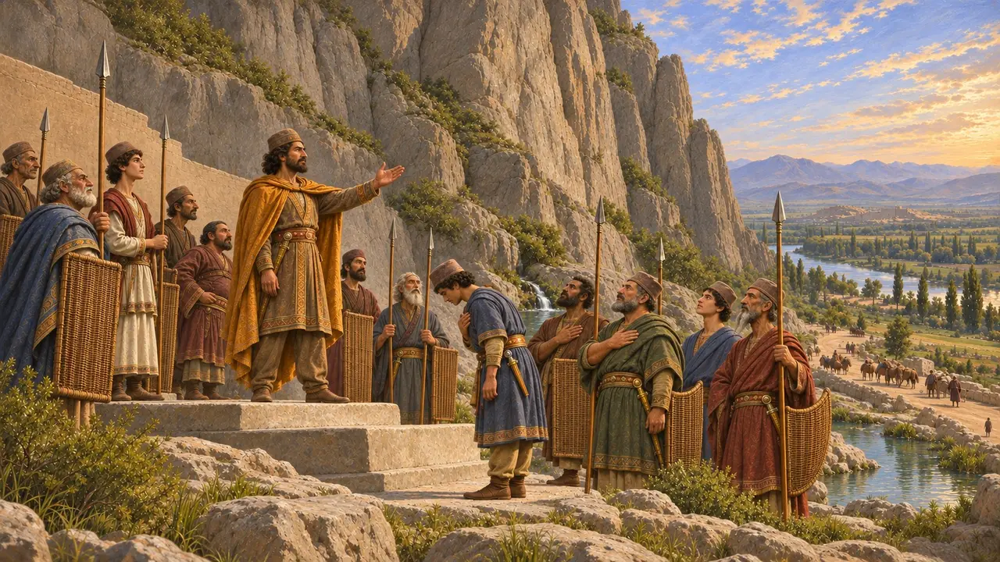
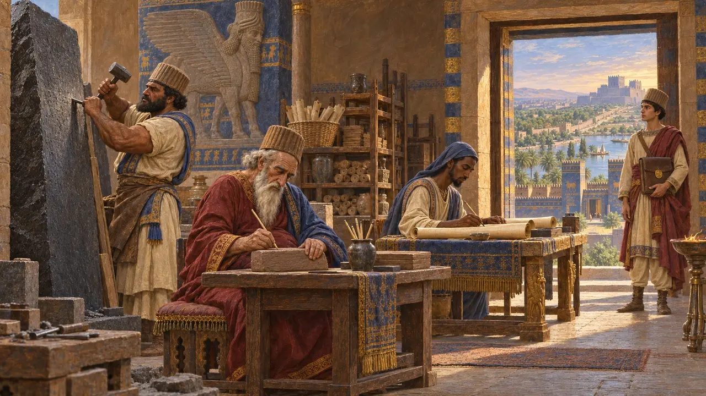
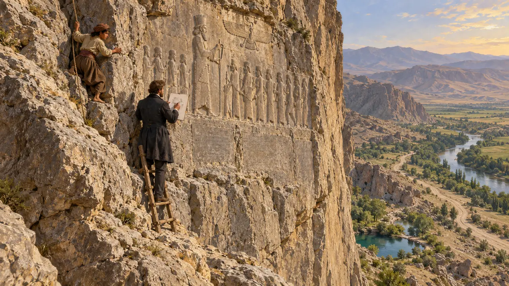
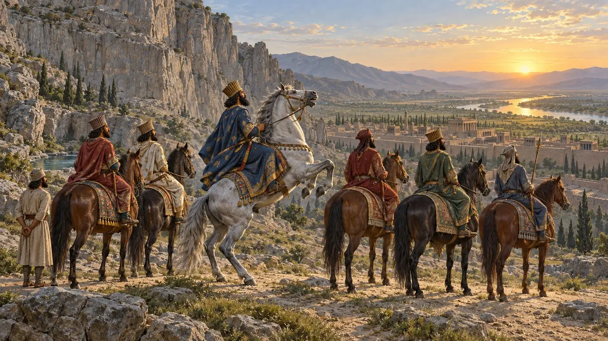

第3关：谎言 · 巴加斯塔纳 · 公元前521年
谎言
巴加斯塔纳（贝希斯敦）的悬崖，大流士在道路上方刻下了他的记述。
百科全书 › 历史
公元前522年，帝国几近分崩离析。冈比西斯死去，一位自称巴尔迪亚的国王占据王位；大流士与六位贵族将其诛杀后，九位叛王在帝国各地纷纷起事。大流士亲自讲述了这段经历，用三种语言刻在巴加斯塔纳——“众神之地”——的悬崖上。

- 522 BCE 巴尔迪亚登上王位
- 522 BCE 七人举事
- 公元前521年 十九场战役
- 520 BCE 浮雕刻成

或许本身就是谎言的国王
争夺中大流士称，冈比西斯曾秘密杀害其弟巴尔迪亚，而一个名叫高墨达的麻葛冒用其名，篡夺了王位。希罗多德也讲述了同样的故事。许多史学家怀疑那位国王确实就是巴尔迪亚，而大流士作为远房宗亲篡夺了王位，需要一套说辞。没有其他史料能够定论。
Behistun inscription sections 10-13; Herodotus 3.61-79


米底的弗拉瓦尔提什
见于史载弗拉瓦尔提什自称是古代米底诸王的后裔。大流士在昆杜鲁击败了他，并在拉加将其擒获。他被残毁肢体，锁在宫门前示众，最后在埃克巴坦那被处以刺刑。铭文正是要让人读懂这一教训。
游戏中： 米底人骑马而来：四分之一的袭扰者是尼萨平原的骑兵。
Behistun inscription sections 24-32
开凿悬崖
见于史载在高高的岩壁上，大流士脚踏倒地的麻葛，面前是九位被缚的国王，上方是阿胡拉马兹达的有翼形象。铭文以埃兰语、巴比伦语和古波斯语写成。工程完成后，下方的岩架被凿去，以免有人攀上去毁损浮雕。
游戏中： 这座浮雕是本关的宏伟工程。
Behistun inscription; Briant (2002) chapter 3

副本遍及各地
见于史载大流士称他将铭文副本送往各地。在巴比伦发现了一份石刻巴比伦语副本的残片，在埃及象岛则发现了一份约一个世纪后抄写的阿拉米语纸草副本。
Behistun inscription section 70; Elephantine Aramaic papyrus of the inscription

岩架上的罗林森
见于史载1835年至1847年间，英国军官亨利·罗林森借助梯子和绳索抄录了这篇铭文；一名库尔德少年荡过岩壁，为巴比伦文部分制作了纸模拓片。古波斯语文本帮助学者读通了巴比伦楔形文字，古代美索不达米亚的典籍也由此得以解读。
H. C. Rawlinson, Journal of the Royal Asiatic Society 10 (1847)

嘶鸣的马
后世传说希罗多德记载，七人约定日出时谁的马先嘶鸣，谁便为王，而大流士的马夫设法让他的马先叫。这是个好故事；但大流士本人的记述则以他出自阿契美尼斯一脉作为王权的依据。
Herodotus 3.84-87; Behistun inscription sections 1-4